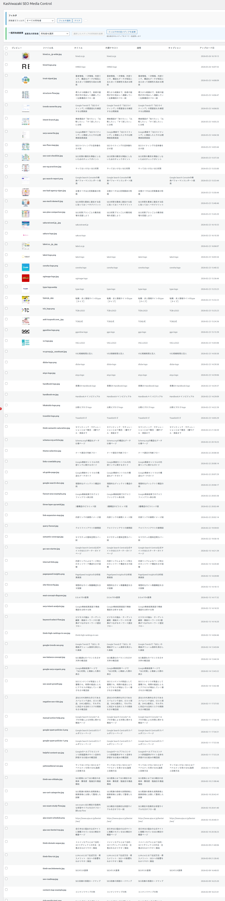

メディア管理
メディアファイルの所有者表示、個別・一括での所有者変更、所有者別フィルター機能について解説します。
所有者情報の確認
メディア管理画面では、すべてのメディアファイルに対して所有者（アップロードしたユーザー）が表示されます。

管理画面の左メニューから「Kashiwazaki SEO Media Control」をクリックします。
メディア一覧が表示されます。各ファイルの「所有者」カラムに、現在の所有者名が表示されます。
個別所有者変更
メディアファイルの所有者を個別に変更する手順を説明します。
メディア一覧から、所有者を変更したいファイルを選択します。
所有者変更のドロップダウンから、新しい所有者となるユーザーを選択します。
変更を適用します。AJAXにより即座に所有者が変更され、画面が更新されます。
所有者変更は wp_posts テーブルの post_author を直接変更します。変更は即座に反映され、取り消し機能はありません。変更前に対象ファイルを確認してください。
一括所有者変更
複数のメディアファイルの所有者を一括で変更できます。チームメンバーの異動や退職時に、所有メディアを別のユーザーに移管する際に便利です。
メディア一覧で、所有者を変更したいファイルのチェックボックスをオンにします。複数ファイルを選択できます。
一括操作メニューから「所有者変更」を選択し、新しい所有者となるユーザーを指定します。
「適用」をクリックします。選択したすべてのファイルの所有者がAJAX経由で一括変更されます。
| 操作 | 説明 |
|---|---|
| 全選択 | 一覧のヘッダーにあるチェックボックスで、表示中の全ファイルを選択できます。 |
| 個別選択 | 各ファイルのチェックボックスで個別に選択します。 |
| 一括変更 | 選択したファイルの所有者を指定ユーザーに一括変更します。 |
フィルター機能と組み合わせると、特定ユーザーの全メディアを表示してから一括変更を行えるため、効率的な所有者移管が可能です。
フィルター機能
所有者別にメディアを絞り込み表示する機能です。AJAXによるリアルタイムフィルタリングで、ページ遷移なしに結果が更新されます。
メディア管理画面上部のフィルターバーで、絞り込みたい所有者をドロップダウンから選択します。
「フィルター」ボタンをクリックすると、選択した所有者のメディアファイルのみが一覧に表示されます。
フィルターを解除するには、ドロップダウンで「すべてのユーザー」を選択して再度フィルターを実行します。
| フィルター条件 | 説明 |
|---|---|
| すべてのユーザー | フィルターなしで全メディアファイルを表示します。 |
| 特定のユーザー | 選択したユーザーが所有するメディアファイルのみ表示します。 |
フィルター処理はAJAXで非同期的に実行されるため、大量のメディアファイルがある場合でもページ全体の再読み込みは発生しません。
活用シーン
| シーン | 推奨操作 |
|---|---|
| チームメンバーの退職 | フィルターで退職者のメディアを表示し、後任者に一括所有者変更を実行。 |
| メディア管理の棚卸し | 各ユーザーでフィルターし、不要なメディアの特定と整理を実施。 |
| 著者帰属の修正 | 外注ライターがアップロードした画像を、正しい著者に個別変更。 |
| サイト移行後の整理 | サイト移行でユーザーIDが変わった場合、正しいユーザーに所有者を再設定。 |